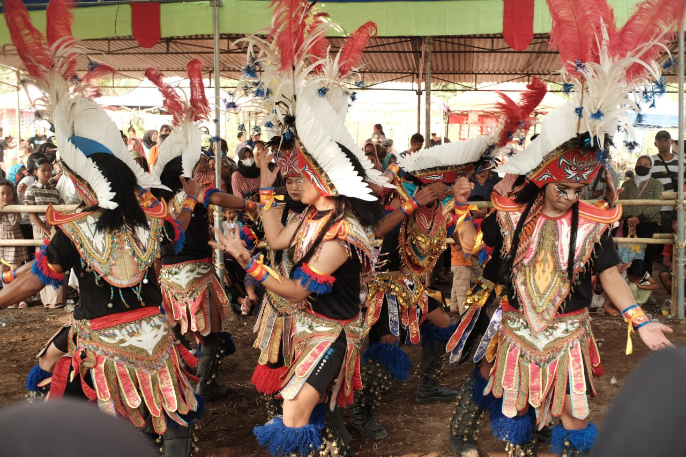
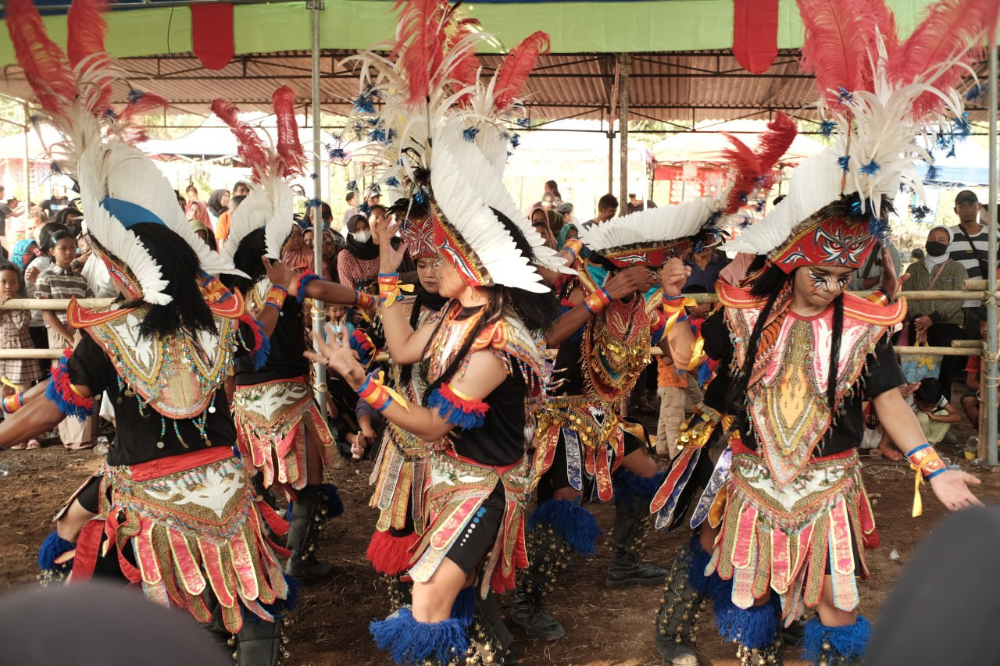

Topeng Ireng adalah kesenian tradisional yang berasal dari Kabupaten Magelang, Jawa Tengah. Kesenian ini diyakini muncul sekitar 1950-an hingga awal 1960-an. Topeng Ireng merupakan salah satu kesenian tradisional yang masih dilestarikan hingga saat ini. Kesenian ini telah menjadi bagian dari identitas budaya masyarakat Magelang dan sekitarnya, termasuk di Dusun Banjarsari, Kelurahan Wonokerto, Kecamatan Turi, Kabupaten Sleman, Provinsi Daerah Istimewa Yogyakarta. Terdapat banyak sanggar kesenian yang mengajarkan tari Topeng Ireng kepada anak-anak muda. Topeng Ireng tentunya menjadi warisan budaya yang tak ternilai harganya dan harus terus dilestarikan agar tidak punah.
Terdapat 2 versi yang berbeda mengenai asal-usul Topeng Ireng. Versi pertama menyebutkan bahwa kesenian ini merupakan bentuk tarian rakyat kreasi baru yang terinspirasi dari kesenian Kubro Siswo. Kubro Siswo adalah kesenian yang berasal dari desa Tuk Songo, didirikan oleh Kiai Sudiyono pada tahun 1930-an. Kesenian ini awalnya berfungsi sebagai sarana untuk menyebarkan agama Islam dan mengajarkan nilai-nilai kearifan lokal. Sedangkan versi kedua menyebutkan bahwa Topeng Ireng merupakan kesenian yang sudah ada sejak zaman Kerajaan Mataram Kuno. Kesenian ini awalnya digunakan sebagai hiburan bagi para prajurit yang sedang beristirahat. Topeng Ireng dianggap dapat memberikan semangat dan motivasi bagi para prajurit untuk berperang melawan musuh.
Terlepas dari asal-usulnya, Topeng Ireng sarat akan makna dan filosofi. Kesenian ini menggambarkan semangat masyarakat agraris dalam bergotong royong dan bercocok tanam. Semangat ini tercermin dalam keakraban masyarakat dan hasil panen salak madu di Dusun Banjarasari. Topeng Ireng juga sering digunakan sebagai sarana untuk menyampaikan pesan-pesan moral dan kritik sosial.
Topeng Ireng di Dusun Banjarsari telah mengalami perkembangan dari perkembangan dari musik pengiring hingga kostum yang digunakan. Topeng Ireng dimainkan oleh sekelompok penari yang mengenakan topeng dan kostum dominan hitam dengan corak warna lainnya atau sebaliknya. Penari-penari ini biasanya diiringi oleh alat musik tradisional seperti gendang. Gerakan tari Topeng Ireng didominasi oleh gerakan kaki yang lincah dan atraktif. Topeng Ireng biasanya ditampilkan dalam berbagai acara di Dusun Banjarsari, seperti pernikahan, khitanan, dan hari-hari besar keagamaan.
Jika teman-teman yang tertarik untuk menikmati Topeng Ireng dari Banjarsari, maka dapat langsung mengunjungi Dusun Banjarsari pada saat terdapat acara pernikahan, khitanan, dan hari-hari besar keagamaan dan menyaksikan pertunjukan kesenian ini secara langsung. Selain itu, teman-teman dapat menikmati Topeng Ireng Banjarsari secara online melalui platform YouTube yang telah disediakan.
 
